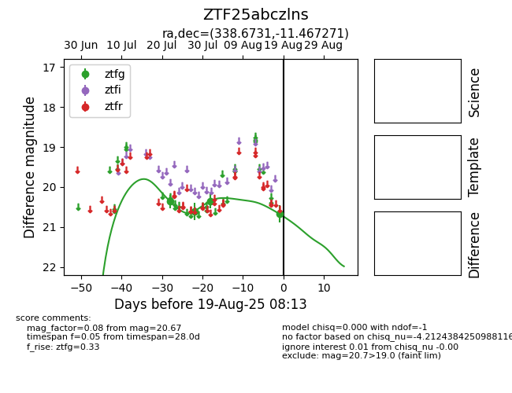

Target ZTF25abczlns at 2025-08-19 08:13, see:
FINK: fink-portal.org/ZTF25abczlns
Lasair: lasair-ztf.lsst.ac.uk/objects/ZTF25abczlns
ALeRCE: alerce.online/object/ZTF25abczlns
alt names
ZTF25abczlns (ztf,fink)
coordinates:
equatorial (ra, dec) = (338.6731,-11.46727)
galactic (l, b) = (52.2215,-54.30828)
photometry
last ztfg=20.67
4 ztfg detections
